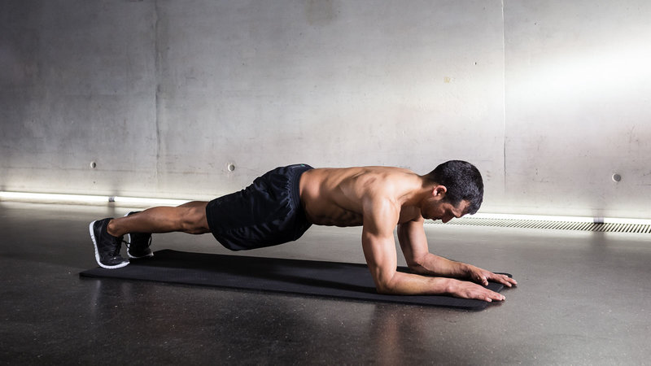
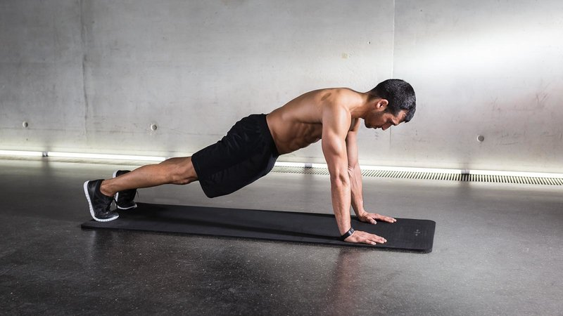
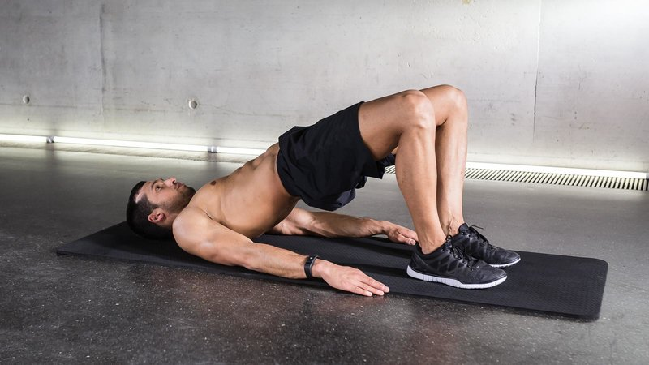
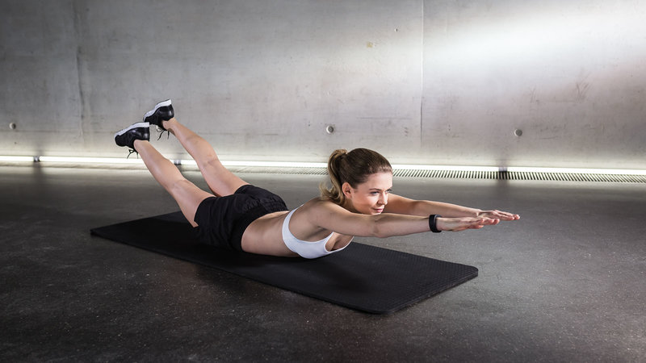
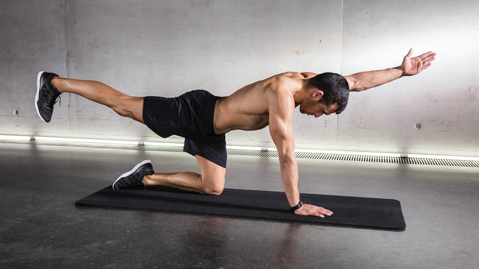
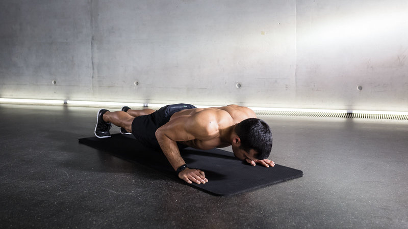

BACK
Are you wondering how to get a stronger back? The following 6 bodyweight exercises will give you a great at home back workout. You don’t need any equipment for these – just your own body weight.
In general, bodyweight exercises often require a lot of core stability. To develop this core stability, your abs and back have to learn to work together. Because one can’t be strong or stronger without the other. That’s why besides exercises with additional weight like squats, deadlifts, and pull-ups, an effective home back workout should also include the following exercises.
WORKOUT
So, you’re ready to round out your training with these top 6 bodyweight back exercises? Whether you’re a beginner runner who wants to develop a stronger stride, an experienced runner interested in improving your pace, or you just want to develop a stronger core for better overall health, home back workouts are a convenient way to acquire the muscles you need to achieve your goal.
And remember to pace yourself and think about how you breathe when you add these bodyweight back exercises to your exercise routine. Take care of your body and it will serve you well. Let’s get started!
LOW PLANK

STARTING POSITION
Lie on your stomach. Bend your elbows directly under your shoulders and place your forearms on the floor. Extend your legs and rest the balls of your feet on the floor.
HOW TO DO THE EXERCISE:
Lift your hips and thighs off the floor until your body is parallel to the floor. Engage your core and make sure that your body forms a straight line from your head to your feet. Tuck your pelvis under to ensure a flat back. Don’t let your lower back (lumbar region) sag or lift. In the thoracic region, pull your shoulder blades in and down.
HIGH PLANKS

STARTING POSITION
Get on all fours. Place your hands shoulder-width apart directly under your shoulders. Keep your elbows slightly bent.
HOW TO DO THE EXERCISE:
Extend your legs and rest the balls of your feet against the floor. Your body should be diagonal to the floor. Engage your core and make sure that your body forms a straight line from your head to your feet. Tuck your pelvis under and make sure your back is flat. Don’t let your lower back (lumbar region) sag or lift. In the thoracic region, pull your shoulder blades in and down.
BRIDGE

STARTING POSITION
Lie on your back and rest your head on the floor. Bend your knees so your heels are directly under your knees. Keep your arms at your sides with your palms facing down
HOW TO DO THE EXERCISE:
Tuck your pelvis under to ensure a flat lower back (lumbar region). In the thoracic region, pull your shoulder blades in and down. Raise your hips towards the ceiling until they are fully extended and hold this position for 10 seconds while squeezing your glutes. Then lower your hips – ideally, without touching the floor – and repeat the exercise.
SUERMAN

STARTING POSITION
Lie flat on your stomach. Extend your arms forward, palms on the ground.
HOW TO DO THE EXERCISE:
Raise your upper body and then your legs to form an arch. Make sure that your knees and your chest do not touch the floor. Keep your head and neck neutral. Do not overextend your neck and keep your chin tucked. You can bend your arms slightly at the elbows as you extend them up and forward. You can increase or decrease your body tension by slightly raising or lowering your upper body and/or legs simultaneously.
QUADRUPED LIMB RAISES

STARTING POSITION
Raise your upper body and then your legs to form an arch. Make sure that your knees and your chest do not touch the floor. Keep your head and neck neutral. Do not overextend your neck and keep your chin tucked. You can bend your arms slightly at the elbows as you extend them up and forward. You can increase or decrease your body tension by slightly raising or lowering your upper body and/or legs simultaneously.
HOW TO DO THE EXERCISE:
Extend your right arm forward and your left leg backward while keeping your back straight. Hold this position for three to ten seconds and then lower back to start. Repeat on the other side.
PUSH-UP

STARTING POSITION
Get on all fours. Place your hands shoulder-width apart directly under your shoulders. Bend your elbows slightly. Extend your legs and rest the balls of your feet against the floor. Engage your core and make sure that your body forms a straight line from your head to your feet. In the thoracic region, pull your shoulder blades in and down.
HOW TO DO THE EXERCISE:
Lower your upper body and your hips simultaneously. Make sure to engage your core through the whole movement. Keep your elbows tucked close to your body and inhale as you lower down and exhale as you push up.